print('Hello world!')Hello world!Programming today is a race between software engineers striving to build bigger and better idiot-proof programs, and the universe trying to produce bigger and better idiots. So far, the universe is winning. - Rick Cook
Programming is the art of solving a problem by developing a sequence of steps that make up a solution, and then very carefully communicating those steps to the computer. To program, you need to know how to
In this class, we’ll be using both R and Python, and we’ll be using these languages to solve problems that are related to working with data. At first, we’ll start with smaller, simpler problems that don’t involve data, but by the end of the semester, you will hopefully be able to solve some statistical problems using one or both languages.
It will be hard at first - you have to learn the vocabulary in both languages in order to be able to put commands into logical “sentences”. The problem solving skills are the same for all programming languages, though, and while those are harder to learn, they’ll last you a lifetime.
I particularly like the way that Python for Everybody (Severance 2016) explains vocabulary:
Unlike human languages, the Python vocabulary is actually pretty small. We call this “vocabulary” the “reserved words”. These are words that have very special meaning to Python. When Python sees these words in a Python program, they have one and only one meaning to Python. Later as you write programs you will make up your own words that have meaning to you called variables. You will have great latitude in choosing your names for your variables, but you cannot use any of Python’s reserved words as a name for a variable.
When we train a dog, we use special words like “sit”, “stay”, and “fetch”. When you talk to a dog and don’t use any of the reserved words, they just look at you with a quizzical look on their face until you say a reserved word. For example, if you say, “I wish more people would walk to improve their overall health”, what most dogs likely hear is, “blah blah blah walk blah blah blah blah.” That is because “walk” is a reserved word in dog language. Many might suggest that the language between humans and cats has no reserved words.
The reserved words in the language where humans talk to Python include the following:
and del global not with
as elif if or yield
assert else import pass
break except in raise
class finally is return
continue for lambda try
def from nonlocal while That is it, and unlike a dog, Python is already completely trained. When you say ‘try’, Python will try every time you say it without fail.
We will learn these reserved words and how they are used in good time, but for now we will focus on the Python equivalent of “speak” (in human-to-dog language). The nice thing about telling Python to speak is that we can even tell it what to say by giving it a message in quotes:
print('Hello world!')Hello world!And we have even written our first syntactically correct Python sentence. Our sentence starts with the function print followed by a string of text of our choosing enclosed in single quotes. The strings in the print statements are enclosed in quotes. Single quotes and double quotes do the same thing; most people use single quotes except in cases like this where a single quote (which is also an apostrophe) appears in the string.
R has a slightly smaller set of reserved words:
if else repeat while
for in next break
TRUE FALSE NULL Inf
NA_integer_ NA_real_ NA_complex_ NA_character_
NaN NA function ...In R, the “Hello World” program looks exactly the same as it does in python.
print('Hello world!')[1] "Hello world!"In many situations, R and python will be similar because both languages are based on C. R has a more complicated history, because it is also similar to Lisp, but both languages are still very similar to C and run C or C++ code in the background.
R and python both have an “interactive mode” that you will use most often. In the previous chapter, we talked about scripts and markdown documents, both of which are non-interactive methods for writing R and python code. But for the moment, let’s work with the interactive console in both languages in order to get familiar with how we talk to R and python.
Let’s start by creating a Qmd file (File -> New File -> Quarto Document) - this will let us work with R and python at the same time.
Add an R chunk to your file by typing ```{r} into the first line of the file, and then hit return. RStudio should add a blank line followed by ```.
Add a python chunk to your file by typing ```{python} on a blank line below the R chunk you just created, and then hit return. RStudio should add a blank line followed by ```.
Your file should look like this:
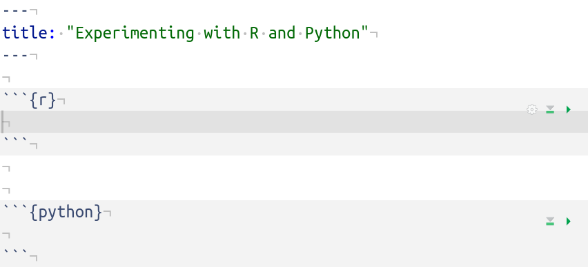
If instead your file looks like this:
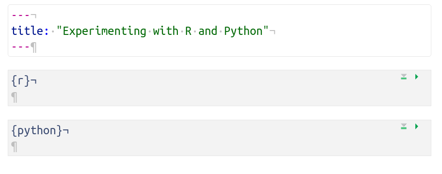
you have visual markdown mode on. To turn it off, click on the A icon at the top right of your editor window:
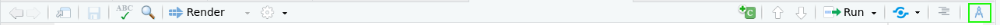
If we are working in interactive mode, why did I have you start out by creating a markdown document? Good Question! RStudio allows you to switch back and forth between R and python seamlessly, which is good and bad - it’s hard to get a python terminal without telling R which language you’re working in! You can create a python script if you’d prefer to work in a script instead of a markdown document, but that would involve working in 2 separate files, which I personally find rather tedious.
In your R chunk or script, type in 2+2 and hit Ctrl+Enter (or Cmd+Enter on a mac). Look down to the Console (which is usually below the editor window) and see if 4 appears. If you’re like me, output shows up in two places at once:
| Location | Picture |
|---|---|
| Chunk | 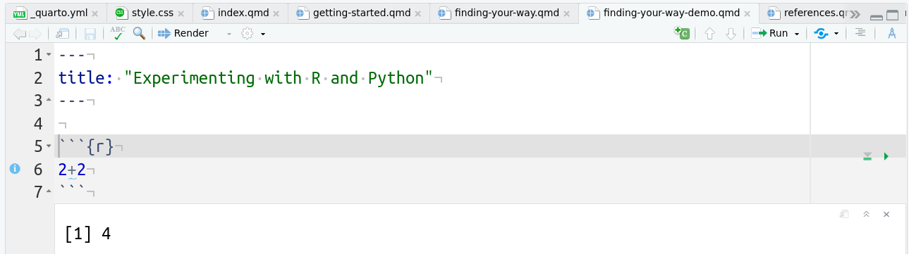 |
| Script | 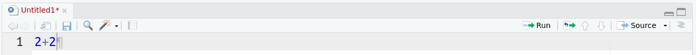 |
| Console | 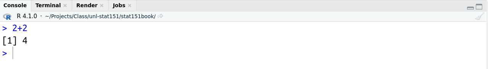 |
R will indicate that it is waiting for your command with a > character in the console. If you don’t see that > character, chances are you’ve forgotten to finish a statement - check for parentheses and brackets.
When you are working in an R script, any output is shown only in the console. When you are working in an R code chunk, output is shown both below the chunk and in the console.
If you want, you can also just work within the R console. This can be useful for quick, interactive work, or if, like me, you’re too lazy to pull up a calculator on your machine and you just want to use R to calculate something quickly. You just type your R command into the console:
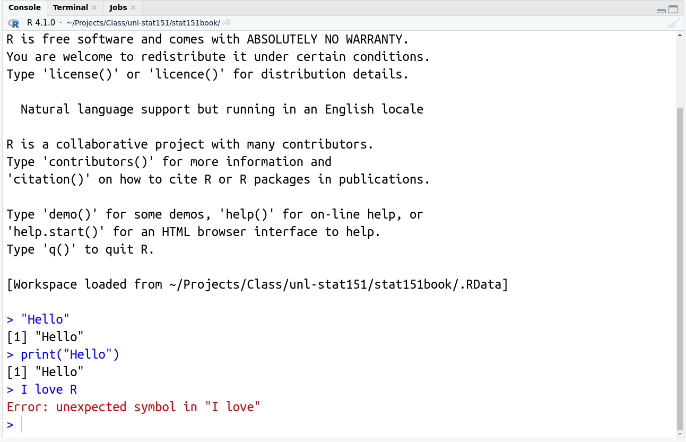
The first two statements in the above example work - “Hello” is a string, and is thus a valid statement equivalent to typing “2” into the console and getting “2” back out. The second command, print("Hello"), does the same thing - “Hello” is returned as the result. The third command, I love R, however, results in an error - there is an unexpected symbol (the space) in the statement. R thinks we are telling it to do something with variables I and love (which are not defined), and it doesn’t know what we want it to do to the two objects.
Suppose we define I and love as variables by putting a value into each object using <-, which is the assignment operator. Then, typing “I love” into the console generates the same error, and R tells us “hey, there’s an unexpected symbol here” - in this case, maybe we meant to add the two variables together.
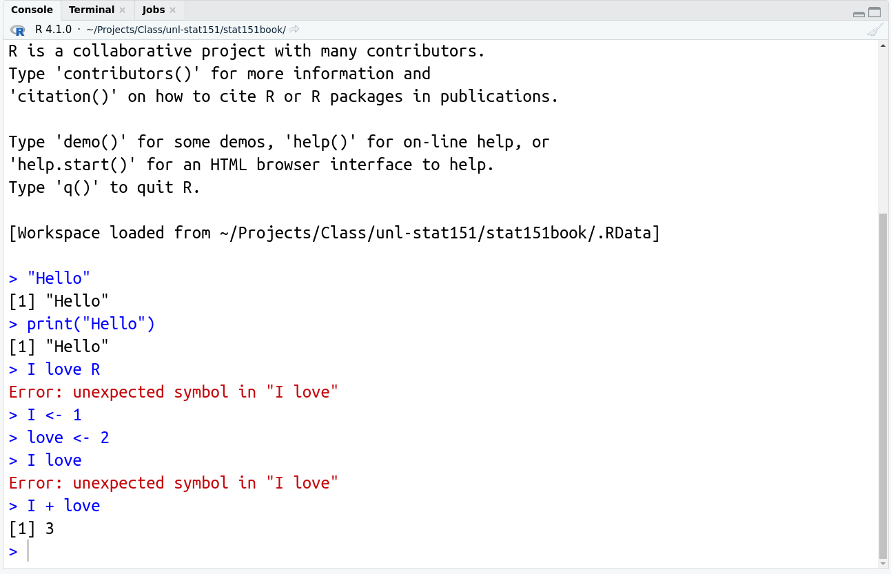
In your python chunk or script, type in 2+2 and hit Ctrl+Enter (or Cmd+Enter on a mac). Look down to the Console (which is usually below the editor window) and see if 4 appears. If you’re like me, output shows up in two places at once:
| Location | Picture |
|---|---|
| Chunk | 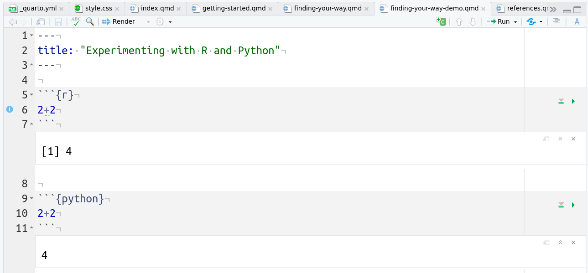 |
| Script | 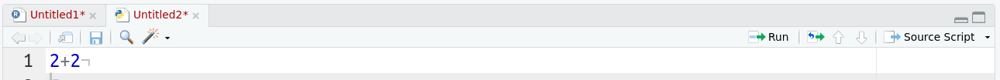 |
| Console | 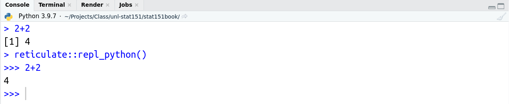 |
Notice that in the console, you get a bit of insight into how RStudio is running the python code: we see reticulate::repl_python(), which is R code telling R to run the line in Python. The python console has >>> instead of > to indicate that python is waiting for instructions.
Notice also that the only difference between the R and python script file screenshots is that there is a different logo on the documents: 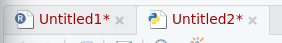. Personally, I think it’s easier to work in a markdown document and keep my notes with specific chunks labeled by language when I’m learning the two languages together, but when you are writing code for a specific project in a single language, it is probably better to use a script file specific to that language.
If you want to start the python console by itself (without a script or working in a markdown document), you can simply type reticulate::repl_python() into the R console. 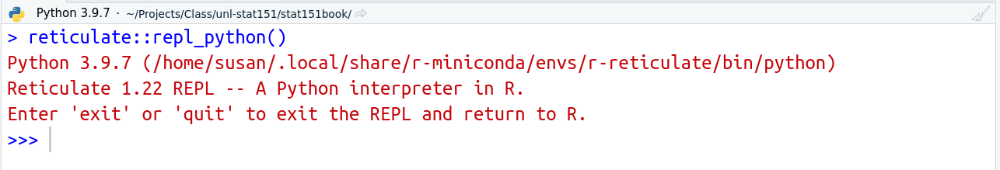
R is nice enough to remind you that to end the conversation with python, you just need to type “exit” or “quit”.
If you want to start a python console outside of RStudio, bring up your command prompt (Darwin on mac, Konsole on Linux, CMD on Windows) and type python3 into that window and you should see the familiar >>> waiting for a command.
In the last chapter, we played around with scripts and markdown documents for python and R. In the last section, we played with interactive mode by typing R and python commands into a console or running code chunks interactively using the Run button or Ctrl/Cmd + Enter (which is the keyboard shortcut).
XXX TODO: Explain the difference between scripts and interactive mode, running scripts in batch mode, etc. XXX
You may be learning to program in R and python because it’s a required part of the curriculum, but hopefully, you also have some broader ideas of what you might do with either language - process data, make pretty pictures, write a program to trigger the computer uprising…
Scripts are best used when you have a thing you want to do, and you will need to do that thing many times, perhaps with different input data. Suppose that I have a text file and I want to pull out the most common word in that file.
Just for fun, let’s work with Oliver Twist, by Charles Dickens, which I have saved here.
# Read in the file
text <- readLines("data/dickens-oliver-627.txt")
# Skip the first 252 lines, which are project gutenberg text
text <- text[-c(1:252)]
# Remove punctuation
text <- gsub("[[:punct:]]", " ", text)
# Convert to lower case
text <- tolower(text)
# Split the lines of text into separate words
text <- strsplit(text, " ")
# Simplify the list
text <- unlist(text)
# Count up the number of occurrences of each word
word_freq <- sort(table(text), decreasing = T)
# Show the counts for the most common 10 words
word_freq[1:10]text
the and to of a he in his that
38656 9594 5393 3944 3843 3752 2496 2374 2341 1953